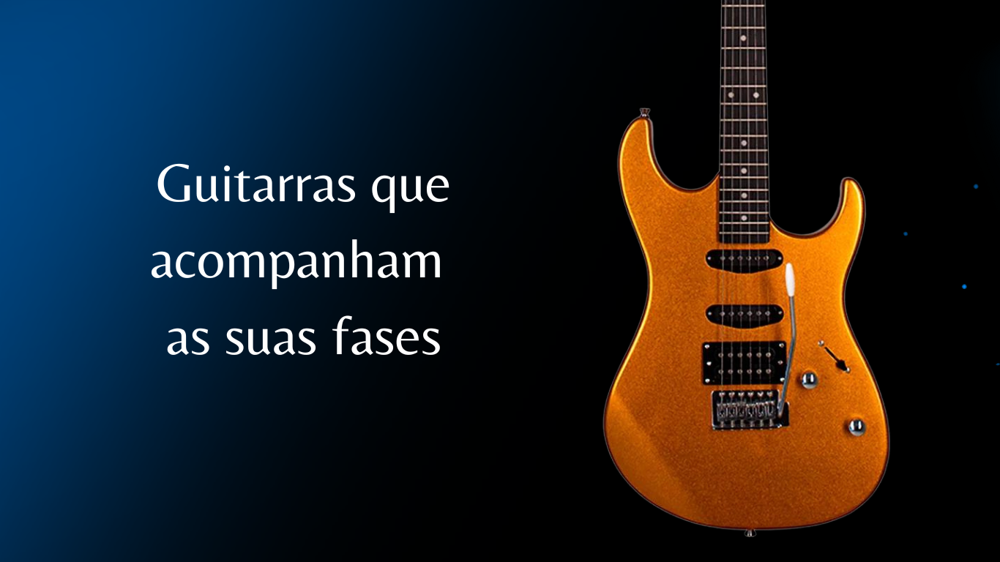
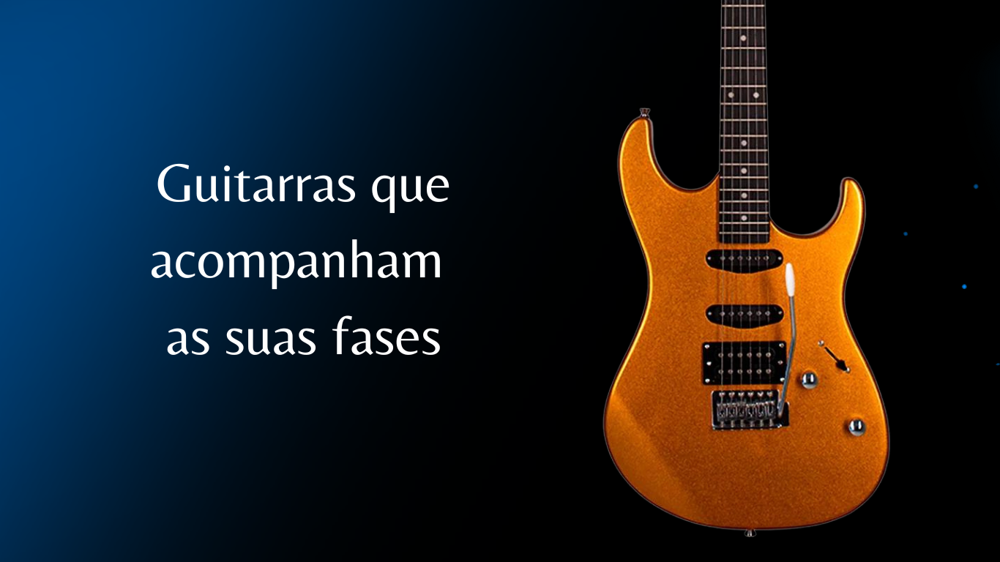
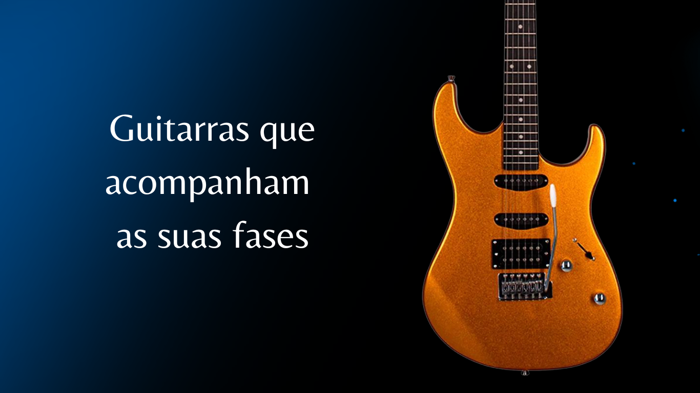
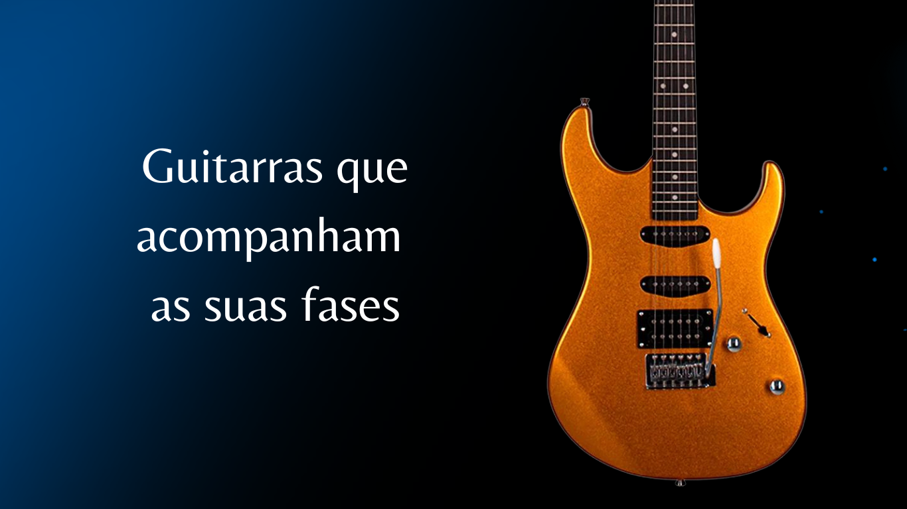

.png)
.png)
.png) 




Telecaster
A Telecaster foi criada por Leo Fender em 1950 para atender à crescente demanda por guitarras elétricas de corpo sólido. Antes disso, a maioria das guitarras era de corpo oco, o que as tornava vulneráveis a feedbacks em volumes altos. Fender queria uma guitarra robusta e confiável que pudesse entregar um som claro e potente, ideal para o crescente mercado de música country e rock. A Telecaster, com seu design simples e durável, estabeleceu novos padrões para a construção de guitarras elétricas e rapidamente se tornou um favorito entre músicos de vários gêneros.

Les Paul
A Les Paul surgiu da colaboração entre a Gibson e o guitarrista inovador Les Paul, que queria uma guitarra elétrica com um som encorpado e sustain prolongado. Lançada em 1952, a Les Paul foi desenvolvida com um corpo sólido de mogno e captadores humbucker, proporcionando um timbre mais quente e menos suscetível a feedbacks do que as guitarras de corpo oco da época. Les Paul, que era um dos pioneiros da gravação multicanal e efeitos de estúdio, influenciou a criação desta guitarra para alcançar um som mais rico e potente, que se tornaria icônico no rock e no blues.

Stratocaster
A Stratocaster foi criada por Leo Fender em 1954 para melhorar o conforto e a versatilidade das guitarras elétricas. Com um corpo contornado para se ajustar melhor ao corpo do músico, três captadores de bobina simples e um sistema de tremolo, a Stratocaster foi projetada para ser uma guitarra mais confortável e flexível em comparação com seus antecessores. O objetivo de Fender era criar um instrumento que pudesse atender a uma ampla gama de estilos musicais, e a Stratocaster rapidamente se tornou a favorita de muitos músicos, especialmente no rock e blues.

SG
A SG, lançada pela Gibson em 1961, foi projetada para ser uma versão mais leve e acessível da Les Paul. A Gibson queria oferecer uma guitarra com um design moderno e mais ergonômico que fosse atraente para a nova geração de músicos de rock e blues. O corpo fino e o peso reduzido da SG ajudavam a torná-la mais confortável para tocar em pé, enquanto os captadores humbucker proporcionavam um som potente e agressivo. A SG rapidamente se tornou popular entre músicos de rock pesado, incluindo nomes lendários como Angus Young e Tony Iommi.

Explorer
A Gibson Explorer, lançada em 1958, foi criada para explorar novos designs futuristas e inovadores. Com um formato angular e ousado, a Explorer foi um passo audacioso no design de guitarras, refletindo as tendências de inovação tecnológica da época. Embora não tenha sido um sucesso comercial imediato, seu design distintivo acabou atraindo a atenção de guitarristas de rock e metal, que apreciavam tanto sua estética única quanto seu som robusto e poderoso.

Flying V
A Flying V, também desenvolvida pela Gibson em 1958, foi uma tentativa de criar uma guitarra com um visual completamente diferente das tradicionais guitarras de corpo sólido. Com seu formato em v a Flying V foi projetada para se destacar visualmente e oferecer uma experiência única para os músicos. O design futurista e o som potente da Flying V atraíram músicos de rock e metal, que encontraram nela uma combinação perfeita de estilo e desempenho.
Warlock
Flying V, também desenvolvida pela Gibson em 1958, foi uma tentativa de criar uma guitarra com um visual completamente diferente das tradicionais guitarras de corpo sólido. Com seu formato em "V", a Flying V foi projetada para se destacar visualmente e oferecer uma experiência única para os músicos. O design futurista e o som potente da Flying V atraíram músicos de rock e metal, que encontraram nela uma combinação perfeita de estilo e desempenho.
.png)
.png)